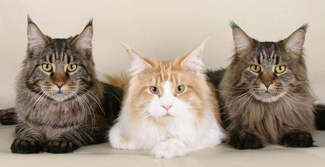

 Мейн-кун (Maine Coon) – загадочная порода кошек, история происхождения которой покрыта многими небылицами и легендами. Мы расскажем вам много интересного (чего вам не расскажет википедия) по поводу того, что представляет собой кот мейн-кун. Содержание: Описание породы Характер Уход и содержание Кормление Цены и где купить История происхождения породы Родина кошек мейн-кун – северо-западный штат Соединённых штатов Америки, который носит название Мэн. Именно от названия родины и произошла порода кошек Maine Coon. Происхождение породы мейн-кун уже давно доказано, но, несмотря на это, существует несколько интересных легенд. коты породы Мейн-кун фото Согласно одной легенде, кошка мейн-кун – это животное от скрещивания самки енота и кота. В подтверждение этой теории приводятся внешние особенности кошки, а именно – хвост, окрас которого очень подобен еноту. Согласно второй легенде, котята мейн-кун появились в результате скрещивания североамериканской рыси с обыкновенным котом. Подтверждением этой теории являются кисточки на ушках кошек этой породы, которые, как полагают, достались им от рыси-мамы. Те, кто изучают происхождение этих кошек, утверждают, что в их истории нет никаких тайн. Порода появилась в результате естественной эволюции. Шерсть мейн-куна – результат приспособления к суровым снежным зимам, так же, как их объёмные пушистые хвосты, которыми они укутывались в особо холодные зимние ночи. Раньше кошки этих пород были отличными охотниками. Сейчас им уже не приходится проявлять свои охотничьи таланты, но они оказали значительное влияние на их уникальный ласковый характер и некоторые его особенности. Сейчас эти большие кошки довольно распространены и любимы не только в США, но во всем мире. Описание породы мейн кун Котята мейн кун, как и взрослый кот этой породы — одни из самых необыкновенных особей в своём роде. Его многочисленные окрасы, густая пушистая шерсть, необыкновенно густой хвост, очаровательная мордашка и большие размеры – те отличия, которые выделяют кошку породы мейн-куна из многих других животных семейства кошачьих. Более подробно об особенностях внешности мейн-куна даёт описание породы. Будет интересно: клички для кошек; клички для котов; кормление крупных кошек. Стандарт породы (внешний вид) Чтобы более ясно понять, как выглядит кот мейн-кун, рассмотрим описание породы (характеристика породы). Голова вытянута в длину, а не в ширину, как у других кошек. Изогнутый профиль, массивный череп, высокие скулы и большие треугольные высоко посаженные уши с кисточками на кончиках – те особенности головы, которые говорят о наличии породы мейн-кун. Глаза имеют овальную форму, они широко расставлены. Цвет глаз должен гармонировать с окрасом кошки. Шея средняя. Тело может быть крупным или очень крупным, из-за чего это кот – самый большой из своих «собратьев». Тело его мускулистое, довольно длинное и широкое. Конечности их не соразмерны телу, они также большие, мускулистые. Межу пальцев лап у них должны присутствовать пучки шерсти. Хвост пушистый и большой. Длина хвоста может доставать, как минимум, до плеч кошки. Шерсть у кошки мейн-куна пушистая и очень густая. В области головы и шеи шерсть средней длины. Но с длинной «гривой», а «штанишки» и живот украшает длинный густой подшёрсток. Окрас может быть разным (чёрный, белый, рыжий…). Вес взрослых кошек может доходить до 15 килограммов, а продолжительность жизни гигантов от 15 до 20 лет. Характер и особенности мейн-куна Мейн-кун фото Внешние признаки этих кошек явно отличают их от других, что является основополагающим аргументом для приобретения котёнка именно этой породы. Мейн-кун – это не только очень красивое животное, поражающее своим большим мускулистым телом (фото с человеком наглядно показывает всю статность кошки), шикарной внешностью и очень выразительными глазами, но и животное, которому достался особенный характер. О его характере много можно узнать от хозяев этого кота, отзывы которых «говорят сами за себя». Именно отзывы владельцев усиливают желание заполучить в дом такого же замечательного питомца. Чем же так отличается этот большой кот от других. Забавные привычки этих больших кошек – то, что умиляет и смешит их обладателей, так как их большой вес делает их игры весьма юмористичными. Эти кошки всегда готовы прийти на помощь, независимо от того, чем вы заняты. Любопытные и милые, они совсем не соответствуют своему большому размеру. Многие считают, что мейн-куны могут обидеть, но это не так. Эти кошки никогда не выпускают свои коготки без надобности, они доброжелательны, ласковы и очень нежны. До скольки лет растут? Организм окончательно сформировывается примерно к 3-5 годам жизни. Подвижные и очень игривые мейн-кунята никогда не позволят вам скучать, поддаются воспитанию. Эти кошки обожают пространство на высоте, поэтому постарайтесь им обеспечить этот комфорт в квартире (доме), приобретя подобие дерева (сделав самостоятельно). При покупке (производстве) такого дерева не забудьте учесть вес животного, конструкция должна быть устойчива и функциональна (место для отдыха, для лазания и точения когтей). Взрослые кошки породы мейн-кун довольно ленивы, они являются наблюдателями, любопытству которых нет предела. Порой кажется, что они знают обо всём, что «творится» в доме, гораздо больше, чем вы сами. Мейн-кун воспитан и обладает чувством собственного достоинства. Они никогда не покусятся на чужую миску и не стащат еду со стола, не будут попрошайничать. Ещё одной интересной особенностью этой кошки является её необыкновенный «разговор». Да, вы не ослышались, эти кошки не мяукают, они издают звуки, подобные человеческим. Их «речи» имеют немало выразительных интонаций. Полезно знать: какой наполнитель для кошачьего туалета выбрать; рейтинг сухих и влажных кормов для котов. Как ухаживать за мейн-куном Содержать этих кошек совсем не сложно, так как даже их густая шерсть не требует особого ухода. Уход и содержание этих «рысей-енотов» очень прост. Шерсть их шёлковая, она не спутывается, поэтому вычёсывать её не сложно. Вычёсыванием шерсти нужно заниматься не реже одного раза в неделю (вполне достаточно). Не забывайте о его шикарном хвосте, который также требует некоторого внимания. Любите своего питомца, следите за ним, как за собой, не забывая об ушках, когтях, своевременном купании и вычёсывании, тогда она проживёт с вами долгую и счастливую жизнь. чем кормить котенка мейн-куна Кормление Кормить мейн-куна можно, как и других породистых кошек. Чем кормить, решать вам, но не забывайте об основных требованиях: пища должна быть сбалансированной, содержать витамины и быть полноценной. Сколько ест мейн кун Рацион питания при использовании сухих кормов супер премиум класса — 50 грамм корма на каждые 3 кг веса кота.